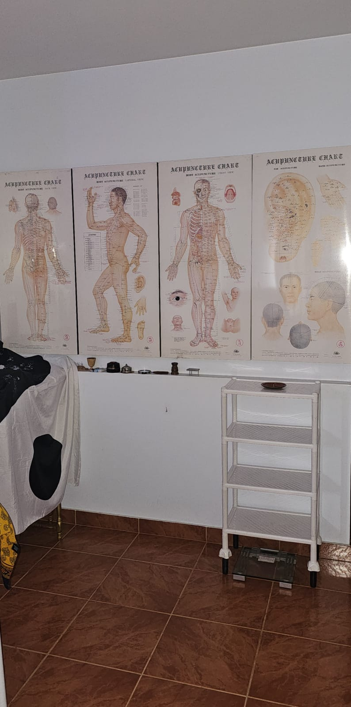
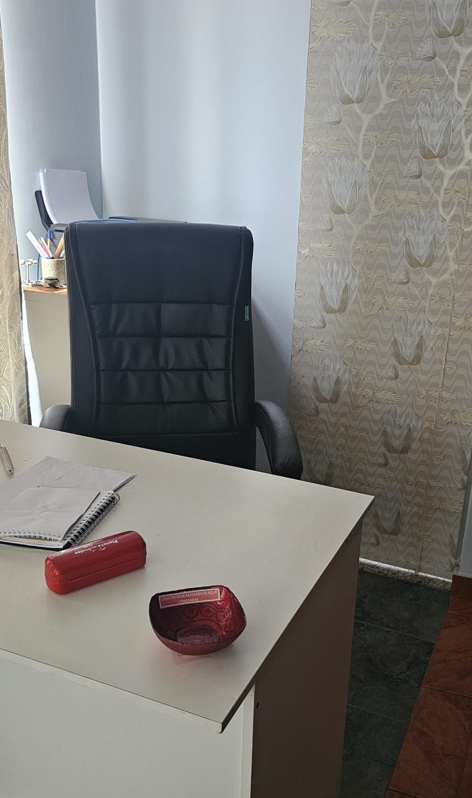
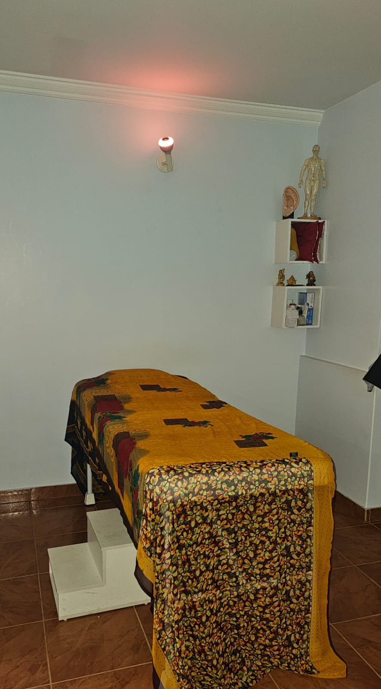
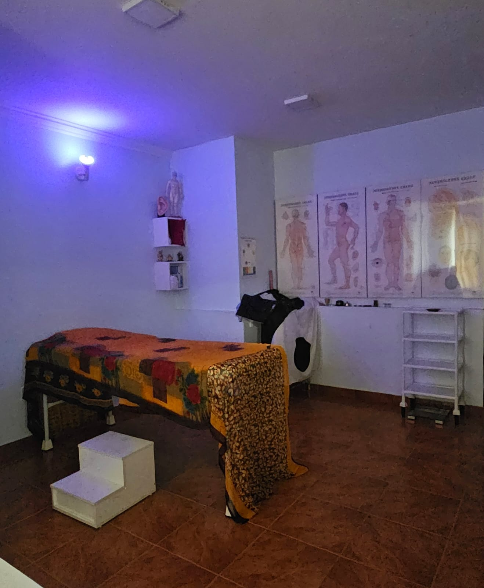

Luzia Santana Silva é uma profissional diferenciada, com graduação superior em Enfermagem em diversas especializações: Enfermagem do Trabalho, Saúde do Trabalhador, Acupuntura/MTC e Especialista Master em Terapia Neural.
Possui ainda formações em Auriculoterapia, Aromaterapia, Ban Fa, Fotobiomodulação, Florais de Bach, Massoterapia, Prescrição de Produtos da MTC, Reiki, Terapia Neural, Tok Sen, dentre outros recursos terapêuticos integrativos.
Ao realizar seus estudos em Acupuntura/MTC, suas expectativas se elevaram. Como Enfermeira do Trabalho, identifica-se profundamente com a promoção da saúde e, ao longo da sua trajetória, agregou conhecimentos com o propósito de promover ações voltadas ao bem-estar integral da pessoa.
Atua com atendimento individual em ambiente confortável e acolhedor. Associa técnicas da MTC para prevenir e tratar desequilíbrios do corpo e da mente, integrando conhecimento milenar e científico. Para maior segurança, utiliza agulhas e materiais descartáveis em cada atendimento personalizado.
A Medicina Tradicional Chinesa (MTC) é uma abordagem milenar fundamentada na teoria do Yin-Yang e dos Cinco Elementos, utilizados como base para avaliar o estado energético e orgânico do indivíduo, promovendo equilíbrio e harmonia integral.
A avaliação é realizada por meio de anamnese detalhada, pulsologia, inspeção da língua e outros métodos tradicionais de diagnóstico energético.
Entre as técnicas estão a acupuntura, moxabustão, dietoterapia chinesa e outras práticas integrativas voltadas ao bem-estar ao equilíbrio do organismo.
As Práticas Integrativas e Complementares em Saúde (PICS), são abordagens terapêuticas com objetivos da promoção, prevenção e recuperação da saúde. Podem ser incorporadas em todos os níveis da atenção integral da saúde humana.
São recursos terapêuticos indicados quando há desarmonia do corpo e mente, considerando aspectos gerais da pessoa, como corpo, mente, emoções e relações sociais.
Além, de fortalecer a autonomia das pessoas para cuidar do seu bem-estar, elevando a qualidade de vida.
Benefícios:
Um ambiente preparado com atenção aos detalhes para proporcionar tranquilidade, conforto e bem-estar em cada atendimento.




⭐ 4.9 no Google • 21 avaliações
O espaço é incrível e o atendimento é melhor ainda. Cheguei com muita dor na cervical e saí sem dor.
Vivian KuglerProfissional excepcional nas terapias integrativas e extremamente competente.
Mauricio OliveiraCompetente e muito humana. Sempre atenta às necessidades do paciente.
Múcio FernandesLuzia transmite paz e confiança. Recomendo de olhos fechados.
Sandra MaiaAmbiente agradável e acolhedor. Atendimento maravilhoso.
Terezinha CirqueiraExperiência maravilhosa, cura e equilíbrio.
Maria CristinaLuzia é incrível, atenciosa e muito cuidadosa.
Gheiza RangelA acupuntura combate dores agudas e crônicas de forma natural e sem medicamentos, estimulando o corpo a recuperar seu equilíbrio e reduzir desconfortos de forma segura e duradoura.
14h às 17h
9h às 17h
9h às 12h
Riacho Fundo I – Brasília/DF
(61) 99986-0748
pontodeequilibrium@gmail.com